Part 1: Becoming Friends with your Camera
Part 1.1: Selfie — The Wrong Way vs. The Right Way
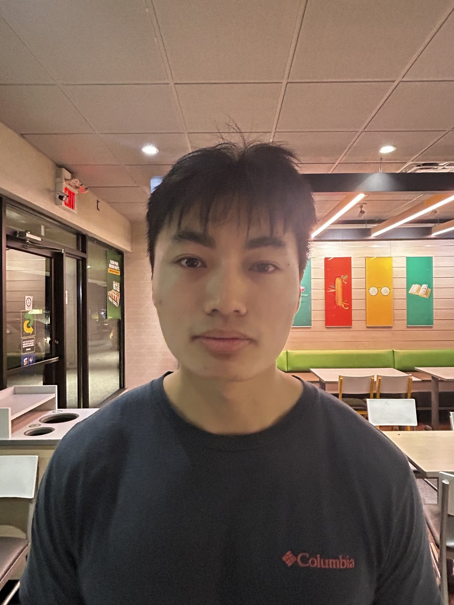
Close-Up Selfie (The Wrong Way)
Wide-angle close-up (~20cm). Strong perspective distortion exaggerates facial features.
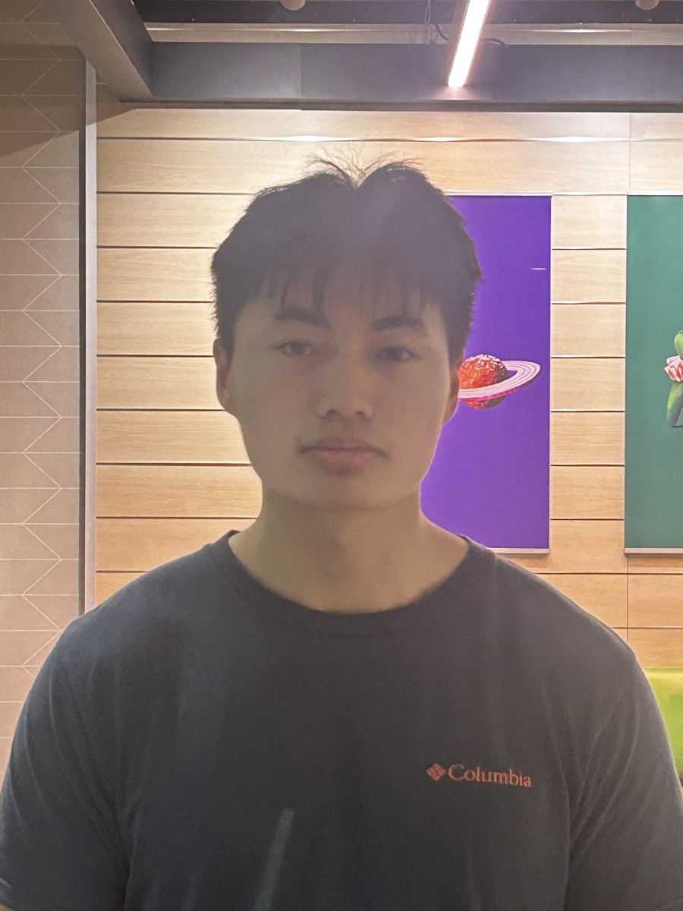
Telephoto Portrait (The Right Way)
Stepped back with telephoto zoom to match subject scale. Perspective is flattened and natural.
Part 1.2: Architectural Perspective Compression
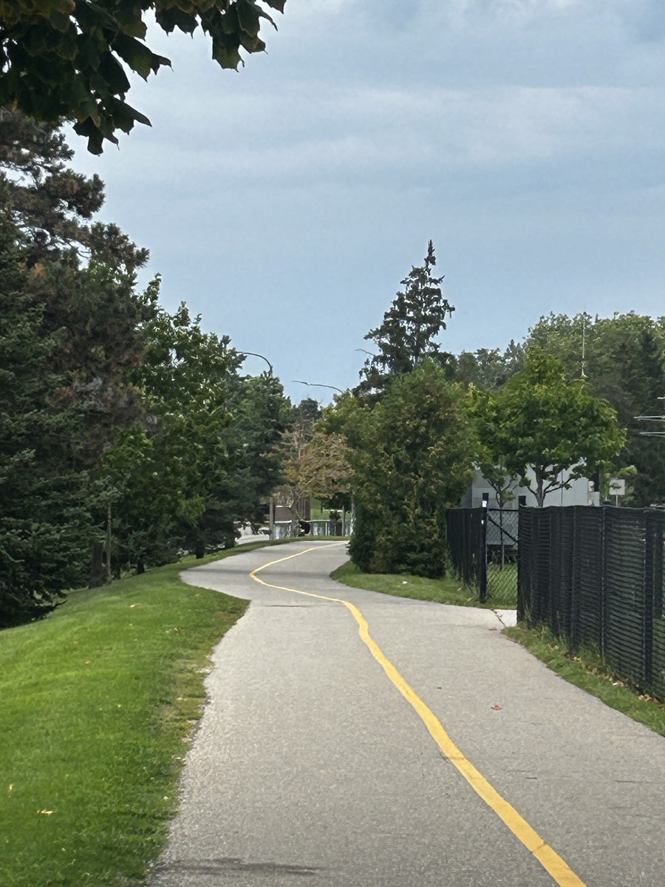
Telephoto Compression (Far + Zoom)
Distant shot with zoom. Background trees and buildings appear compressed against the foreground.
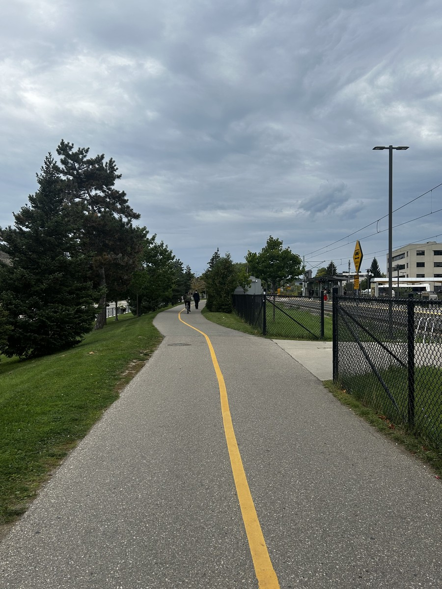
Wide Angle (Walked Closer, No Zoom)
Walked closer with no zoom. Apparent depth is exaggerated and background elements appear smaller.
Part 1.3: The Dolly Zoom (“Vertigo Shot”)
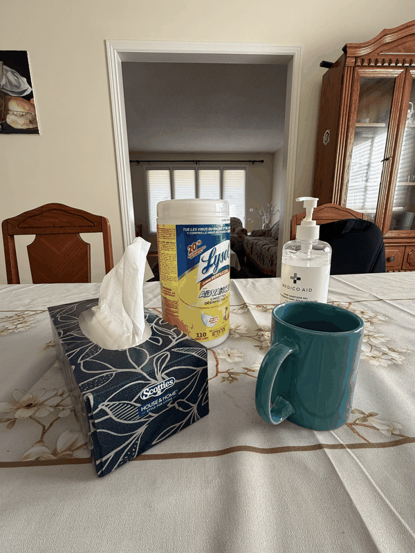
Animated Dolly Zoom Sequence
Subject scale is kept approximately constant while moving the camera back and zooming in.
Part 2: Colorizing the Prokudin-Gorskii Glass Plate Collection
Digitized glass plates contain three vertically stacked monochrome exposures (Blue, Green, Red). Stacking them
directly results in misaligned color fringing, so we find the $(x, y)$ displacement vectors that align Green and
Red to the Blue channel base.
1. Loading & Channel Splitting
Plates are loaded as 32-bit float arrays and scaled to $[0.0, 1.0]$ based on bit depth (divided by 65535 for
16-bit TIFFs or 255 for 8-bit JPEGs). The image is divided vertically into equal thirds: Blue, Green, and Red,
with Blue fixed as the base.
2. Alignment Metrics
We evaluated two metrics to score candidate shifts:
-
Sum of Squared Differences (SSD / L2):
$$\text{SSD}(u, v) = \sum_{i} (u_i - v_i)^2$$
Measures squared intensity differences (lower is better). Sensitive to overall brightness differences between
color channels.
-
Normalized Cross-Correlation (NCC):
$$\text{NCC}(u, v) = \frac{u \cdot v}{\|u\|_2 \, \|v\|_2}$$
Computes cosine similarity between normalized vectors (higher is better). Normalizes for brightness and exposure
differences across channels, making it more reliable than SSD.
3. Border Handling
Glass plates have dark borders and scanning artifacts that trick metrics into aligning the frame rather than the
photograph, and introduces extra computation costs. To avoid this, we apply shifts to the full channel but
evaluate NCC strictly on the central 80% interior (cropping a 10% margin on all sides).
4. Search Strategy
Depending on image resolution, we select between:
- Single-scale exhaustive search: Searches a $[-15, 15]$ pixel window, used for low-res plates
(~400 px width).
- Multi-scale image pyramid: Coarse-to-fine search used for high-res plates (~3700×3200
px) where shifts exceed 100 pixels.
5. RGB Compositing
Once Green and Red are aligned relative to Blue, channels are stacked into RGB order via
np.stack([aligned_r, aligned_g, b], axis=-1) and clipped to $[0.0, 1.0]$.
Single-Scale Alignment Results
Algorithm: For low-resolution plates (~400 px width), channel displacements are small (typically within ±15 pixels). The single-scale exhaustive search proceeds step-by-step:
- Interior Window Cropping: Crop a 10% margin on all sides of the base channel to isolate the central 80% interior, avoiding dark borders and scanning artifacts.
- Search Grid Definition: Define an exhaustive grid over all candidate shifts $(dy, dx) \in [-15, 15] \times [-15, 15]$ (961 candidate offsets).
- Candidate Translation: For each candidate displacement $(dy, dx)$, roll the target channel using
np.roll and extract the corresponding interior window.
- Metric Evaluation: Score the similarity between the base channel crop and the shifted target crop using Normalized Cross-Correlation (NCC).
- Optimal Shift Selection: Track the maximum NCC score and return the $(dy, dx)$ displacement that yields the best alignment.
Single-scale alignment was run on the three benchmark low-resolution plates: Cathedral
(00125v.jpg), Monastery (00056v.jpg), and Tobolsk
(01164v.jpg).
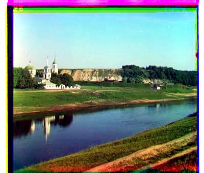
Cathedral
00125v.jpg
green shift: (2, 5) • red shift: (1, 10)
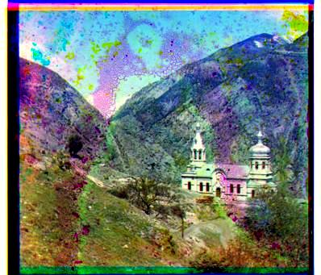
Monastery
00056v.jpg
green shift: (1, 6) • red shift: (1, 13)
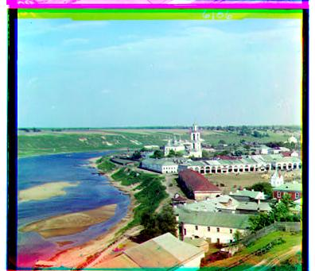
Tobolsk
01164v.jpg
green shift: (2, 6) • red shift: (3, 11)
Multi-Scale Pyramid Alignment Results (All 18 Dataset Images)
Algorithm: For high-resolution scans (~3700×3200 px per channel), displacements frequently
exceed 100 pixels, making exhaustive search computationally infeasible. We
implemented a recursive coarse-to-fine image pyramid:
- Base Case: If either channel dimension is $\le 200$ pixels, execute single-scale exhaustive
search over a $[-15, 15]$ window.
- Downsampling: Otherwise, downsample base and target channels by a factor of 2 using bilinear
interpolation (
cv2.resize) and recursively call align_pyramid.
- Offset Scaling: Multiply the coarse displacement returned from the lower scale by 2
(
dy *= 2, dx *= 2).
- Local Refinement: Pre-shift the target channel by the coarse estimate and search a small
$[-2, 2]$ refinement window to find residual adjustments $(\Delta y, \Delta x)$.
- Accumulation: Return the total accumulated displacement $(dy + \Delta y, dx + \Delta x)$.
This reduces search complexity from $O(W^2)$ to $O(\log N)$ pyramid levels. Below are the results of running the pyramid alignment across all 18 dataset images using NCC.
00056v.jpg
Low-Res
green shift: (1, 6) • red shift: (1, 13)
00125v.jpg
Low-Res
green shift: (2, 5) • red shift: (1, 10)
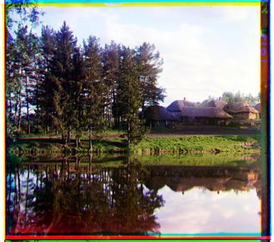
00163v.jpg
Low-Res
green shift: (1, -3) • red shift: (1, -4)
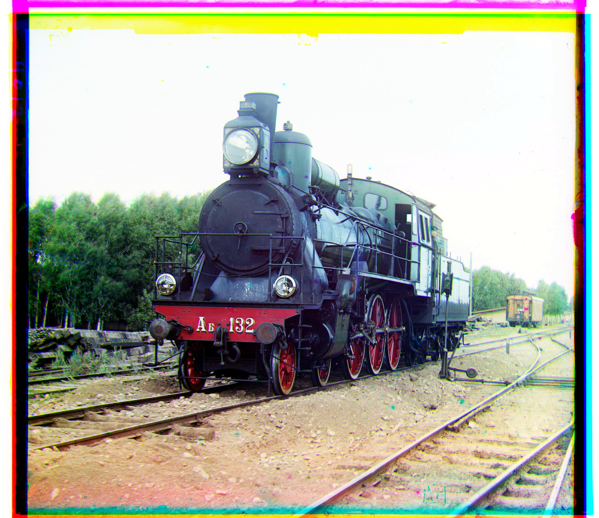
00458u.jpg
High-Res
green shift: (6, 43) • red shift: (32, 87)
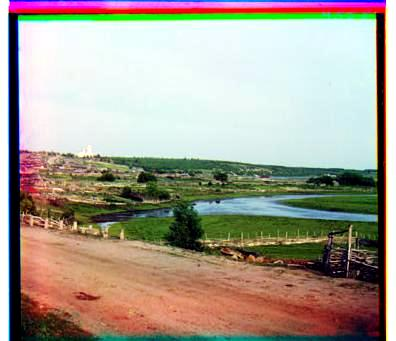
00804v.jpg
Low-Res
green shift: (-2, 6) • red shift: (-4, 13)
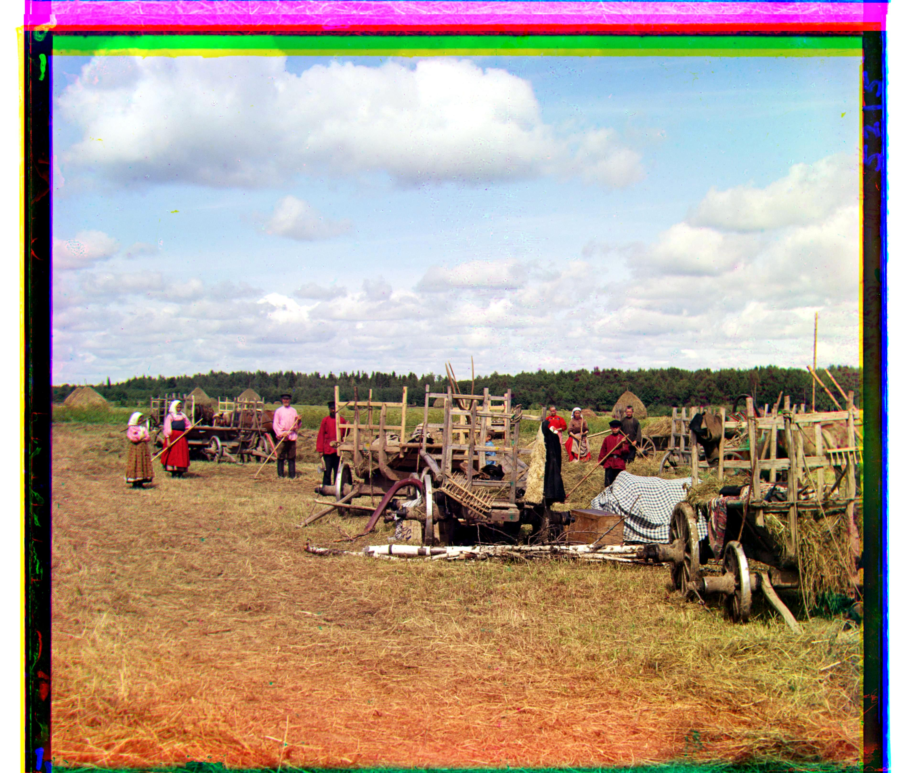
01007a.jpg
High-Res
green shift: (14, 60) • red shift: (13, 129)
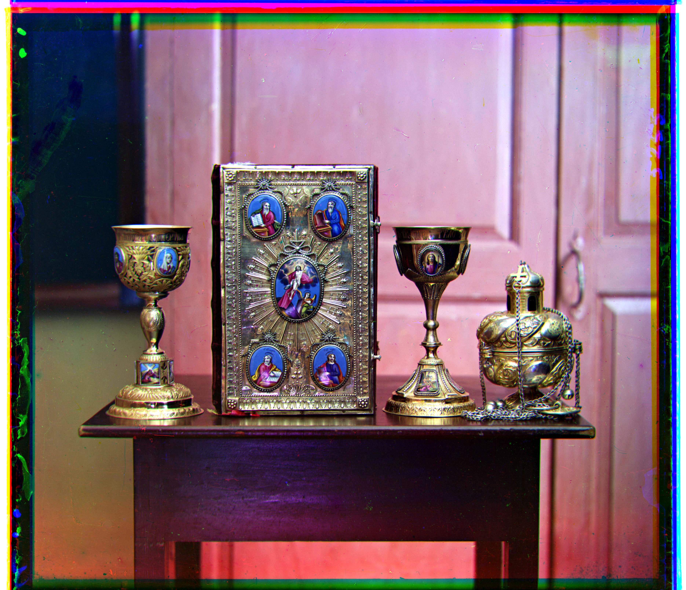
01047u.jpg
High-Res
green shift: (20, 24) • red shift: (33, 71)
01164v.jpg
Low-Res
green shift: (2, 6) • red shift: (3, 11)
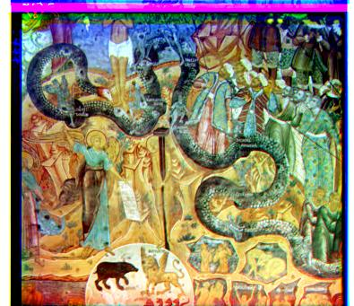
01269v.jpg
Low-Res
green shift: (2, 6) • red shift: (3, 13)
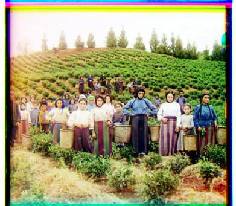
01522v.jpg
Low-Res
green shift: (2, 6) • red shift: (2, 13)
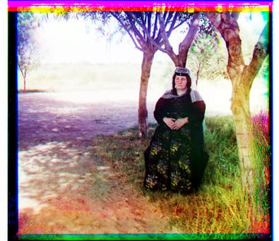
01597v.jpg
Low-Res
green shift: (1, 7) • red shift: (1, 16)
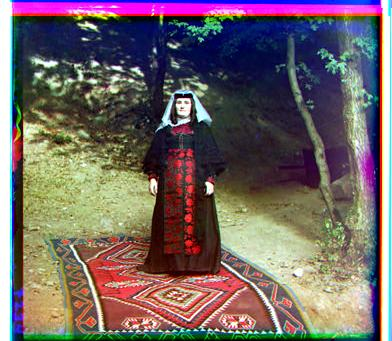
01598v.jpg
Low-Res
green shift: (0, 8) • red shift: (-1, 16)
01657u.jpg
High-Res
green shift: (8, 55) • red shift: (11, 117)
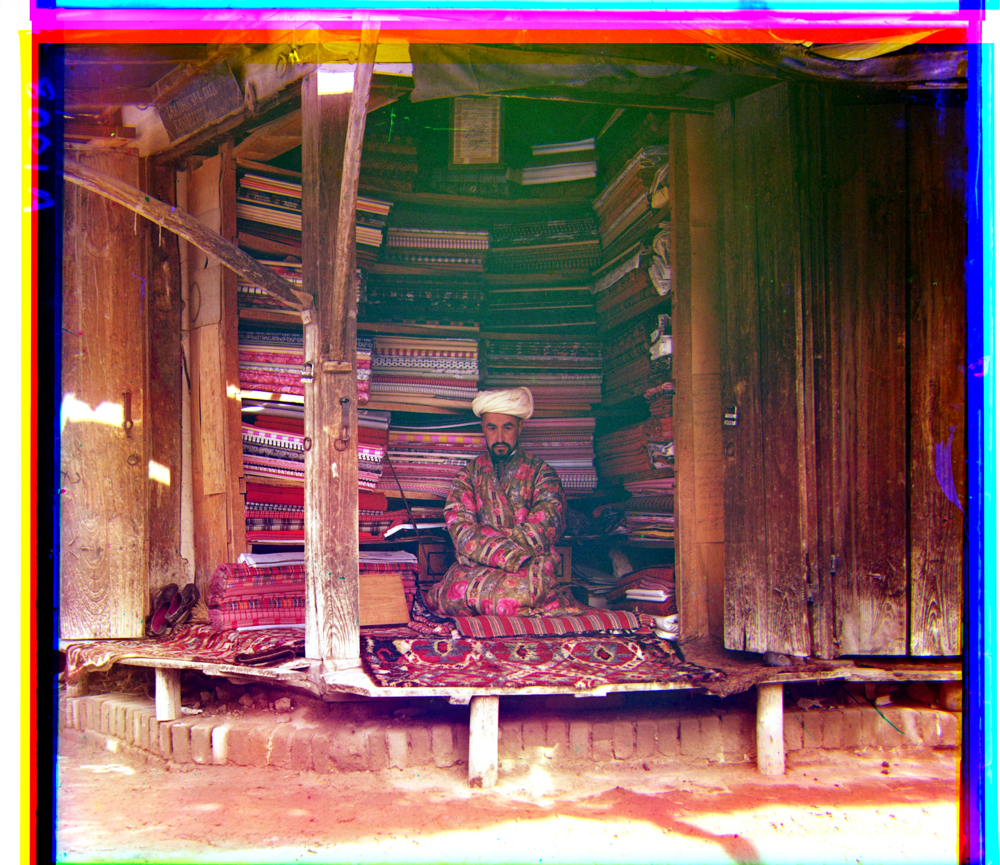
01725u.jpg
High-Res
green shift: (44, 77) • red shift: (77, 161)
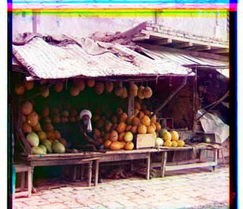
01728v.jpg
Low-Res
green shift: (1, 8) • red shift: (1, 18)
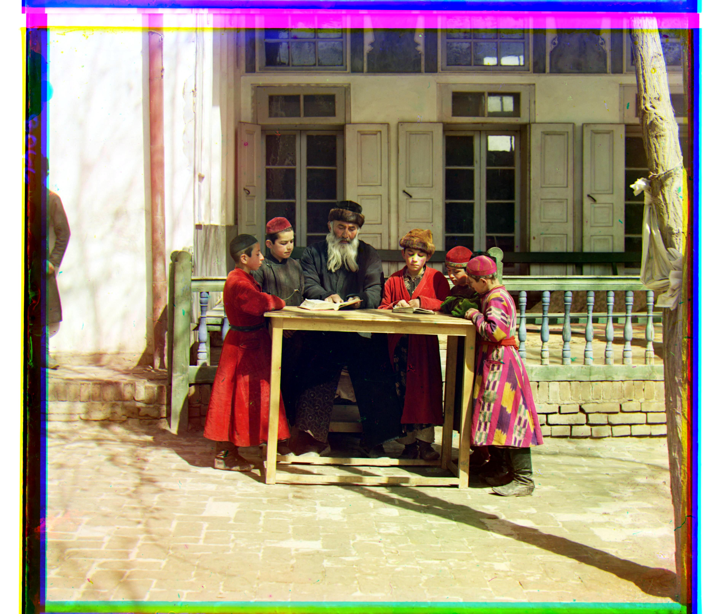
01861a.jpg
High-Res
green shift: (39, 71) • red shift: (63, 148)
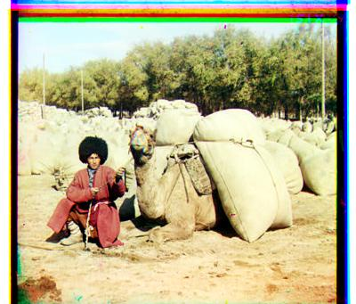
10131v.jpg
Low-Res
green shift: (2, 6) • red shift: (3, 12)
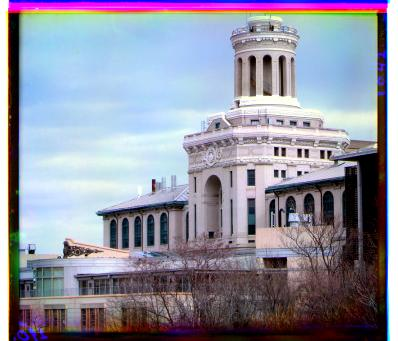
31421v.jpg
Low-Res
green shift: (0, 8) • red shift: (0, 13)
Custom Images from the Library of Congress
In addition to the 18 example images provided, 3 additional glass plate negatives were downloaded from the Library
of Congress Prokudin-Gorskii collection and processed using the pyramid alignment algorithm:
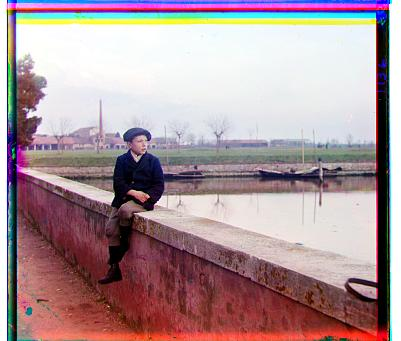
00220v.jpg
Low-Res
green shift: (-1, 4) • red shift: (-1, 10)
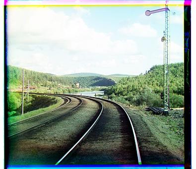
00611v.jpg
Low-Res
green shift: (0, 5) • red shift: (-1, 11)
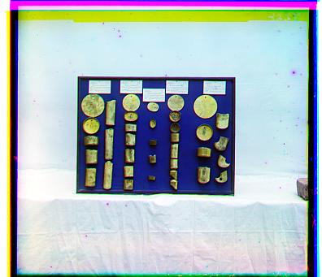
00537v.jpg
Low-Res
green shift: (3, 5) • red shift: (4, 12)
Bells & Whistles: Automatic Color Balancing & Contrast Adjustment
Raw aligned composites often exhibit color casts and low contrast due to exposure variations across plates and chemical aging. We implemented a two-step post-processing enhancement pipeline:
-
Interior Window Cropping: Statistics are computed on the central 80% interior (cropping a 10% margin on all sides) to prevent dark borders from skewing channel means or anchoring contrast percentiles.
-
Automatic White Balancing (Gray World): Assumes the average scene color is neutral gray. We compute the mean intensity of each channel ($\mu_r, \mu_g, \mu_b$) and scale each channel by $\mu_{\text{gray}} / \mu_c$ where $\mu_{\text{gray}} = (\mu_r + \mu_g + \mu_b) / 3$ to neutralize color casts.
-
Robust Contrast Stretching: Linearly rescales pixel values between the 1st and 99th percentiles of each channel to $[0.0, 1.0]$, expanding dynamic range while ignoring noise and hot pixels.
Before & After Comparisons
01657u.jpg
01047u.jpg
00125v.jpg
Commands to Reproduce Results
All results can be reproduced directly using main.py:
# (Run from inside the 1/ directory)
# 1. Single-scale baseline on all low-resolution (.v.jpg) images:
python main.py --low-res single ncc
# 2. Multi-scale pyramid alignment on all dataset and custom images:
python main.py --all pyramid ncc
# 3. Running an individual image:
python main.py data/00125v.jpg single ncc
python main.py data/00056v.jpg single ncc
python main.py data/01164v.jpg single ncc
python main.py data/00458u.jpg pyramid ncc
# 4. Bells & Whistles: running with automatic white balance & contrast enhancement:
python main.py data/01657u.jpg pyramid ncc --enhance
python main.py --all pyramid ncc --enhance